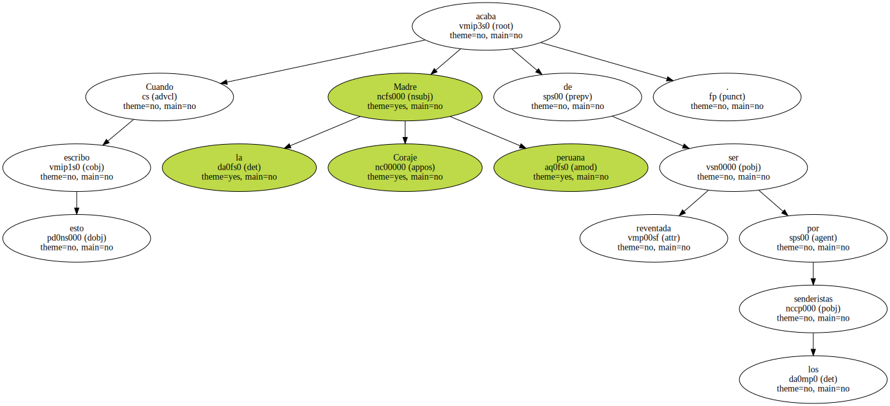
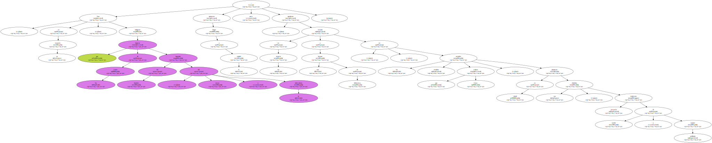
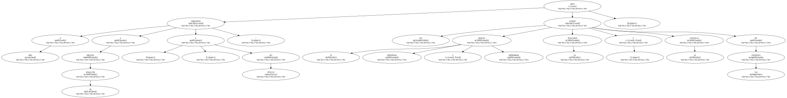
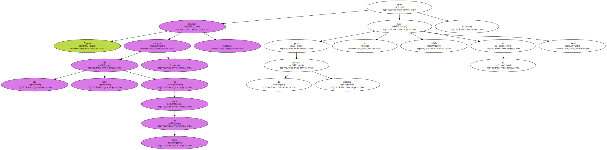
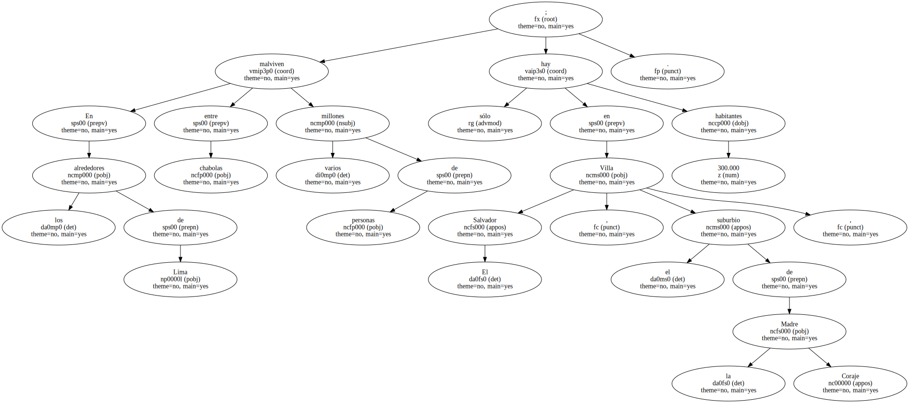
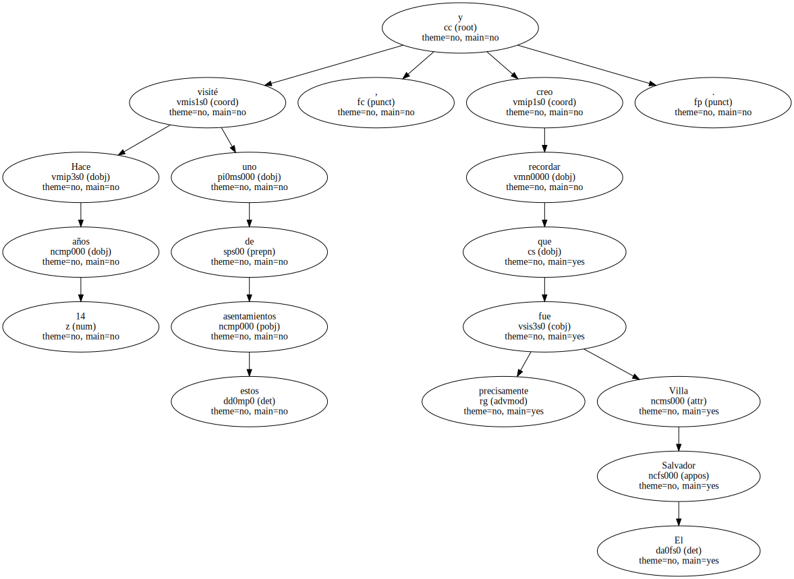
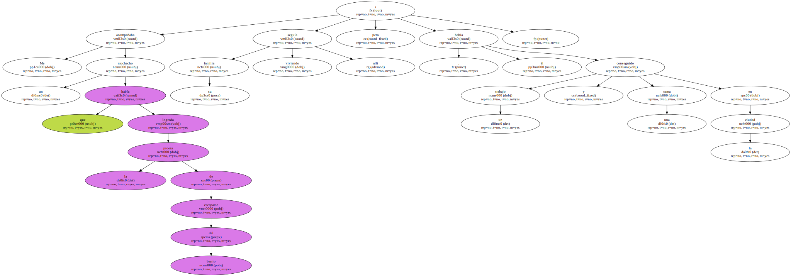
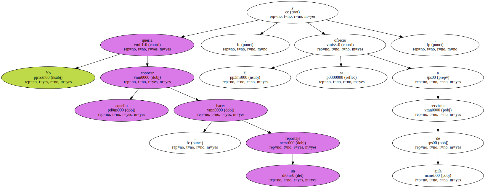
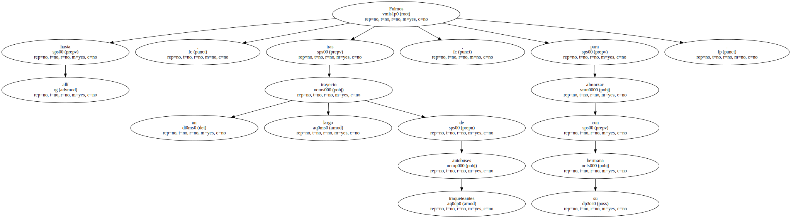
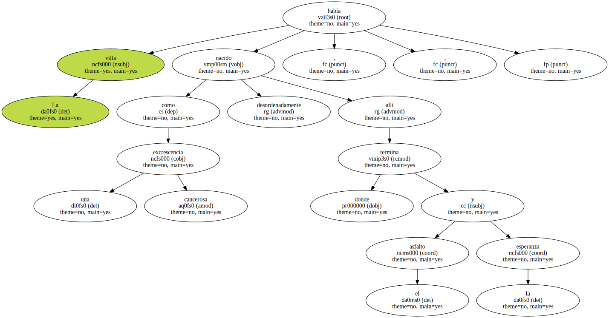

Cuando escribo esto la Madre Coraje peruana acaba de ser reventada por los senderistas.
Veo su foto en los periódicos : una mujer joven , atractiva , probablemente zamba , esto es , mestiza de negra e india ; oscura de color , en fin , como son oscuros todos los habitantes de las villas limeñas , arrabales de miseria en donde se hacinan cientos de miles de personas.

Son , en su mayoría , indígenas que bajaron de los Andes huyendo del hambre , del atraso y la tuberculosis ; quisieron llegar a la ciudad , pero quedaron varados en las afueras , a una decena de kilómetros , en los sórdidos arenales que rodean Lima , en donde plantaron sus chabolas , precarios tenderetes de cartón y cajones astillados.
Aspiraban a más : a mejorar su situación , a ser felices ; pero les atrapó la miseria suburbana y subhumana , la ferocidad y la violencia de los arrabales.
Alguno consigue escapar de allí , muy de tarde en tarde ; pero para la inmensa mayoría no hay ni salida ni retorno.
En los alrededores de Lima malviven entre chabolas varios millones de personas ; sólo en Villa El Salvador , el suburbio de la Madre Coraje , hay 300.000 habitantes.
Hace 14 años visité uno de estos asentamientos , y creo recordar que fue precisamente Villa El Salvador.
Me acompañaba un muchacho que había logrado la proeza de escaparse del barrio ; su familia seguía viviendo allí , pero él había conseguido un trabajo y una cama en la ciudad.
Yo quería conocer aquello , hacer un reportaje , y él se ofreció a servirme de guía.
Fuimos hasta allí , tras un largo trayecto de traqueteantes autobuses , para almorzar con su hermana.
La villa había nacido como una excrescencia cancerosa , desordenadamente , allí donde termina el asfalto y la esperanza.
